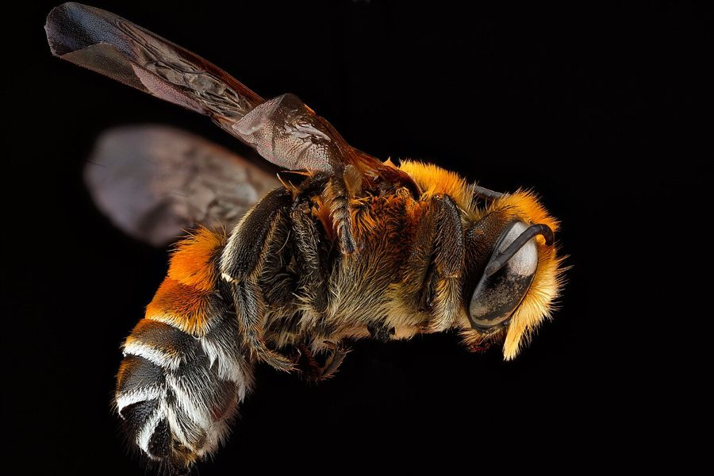

लैनेट लीफ़कटर मधुमक्खीLanate Leafcutter Bee
Megachile lanata · Megachilidae · INS-0180

- Scientific name वैज्ञानिक नाम
- Megachile lanata (Fabricius, 1775)
- Family कुल
- Megachilidae
- Hindi हिंदी
- लैनेट लीफ़कटर मधुमक्खी
- Local names स्थानीय नाम
- lanate leafcutter bee, bee
- Status here यहाँ की स्थिति
- native
- Movement आवागमन
- Resident, here all year
- Known from कहाँ दर्ज
- Others have published records from the wider Awadh–Purvanchal plain, none yet from Basti–Ayodhya अवध–पूर्वांचल से दूसरों के प्रकाशित अभिलेख, बस्ती–अयोध्या से अभी नहीं
- IUCN IUCN
- not evaluated
- Review समीक्षा
- audited and independently read
When to look कब देखें
Present all year. साल भर मौजूद।
Uses and possibilities उपयोग और संभावनाएँ
Drawn from the documented uses in the profile below, where each is labelled traditional, current or a research lead. All uses →
लैनेट लीफ़कटर मधुमक्खी / Lanate Leafcutter Bee
Megachile lanata (Fabricius, 1775) — Megachilidae
लैनेट लीफ़कटर मधुमक्खी — काली धारीदार मक्खी जो पत्तियों को अपनी जबड़ों से काटती है। कभी-कभी गेहूँ के पौधों से भी रोएँ नोचती है (ऊन जैसा दिखता है)। फूलों पर बैठकर शहद और पराग निकालती है। भारत में सर्वत्र पाई जाती है। अच्छी परागणकर्ता मक्खी है।
Quick Identification त्वरित पहचान
| Feature | Description |
|---|---|
| Size | Female 12–16 mm; male 10–14 mm |
| Colour | Black with whitish or pale hair bands on abdomen |
| Body shape | Robust, stocky bee |
| Antennae | Short, 12-segmented (females) |
| Eyes | Large, dark compound eyes |
| Pollen brush | Dense scopa (pollen-carrying brush) on underside of abdomen |
| Behaviour | Active flyer, visits flowers; cuts leaves |
| Nesting | Solitary; nests in cavities |
Field tip: Look for a robust black bee with pale hair bands visiting flowers. The bee is a frequent visitor to flowering shrubs and garden plants. It can be seen cutting semicircular or circular pieces from leaves, using its powerful mandibles. Unlike honeybees, it does not dance. It is a solitary bee; no workers or colonies. Females are larger than males and carry pollen in a dense brush on the underside of the abdomen.
हिंदी — कैसे पहचानें: काली मक्खी, सफ़ेद बालों की धारियाँ। पत्तियों को काटती है। फूलों पर बैठी पराग निकालती है। अकेली रहती है, शहद नहीं बनाती।
Morphology आकारिकी
Biometrics:
| Measurement | Range |
|---|---|
| Female body length | 12–16 mm |
| Male body length | 10–14 mm |
| Wingspan | 25–35 mm |
| Mandible length | 2–3 mm |
Female: Robust bee, larger than the male. Body is predominantly black with pale or whitish hair forming bands on the abdomen, particularly on the first and second abdominal segments. Legs are dark with whitish hair. The underside of the abdomen bears a dense scopa (pollen-carrying brush) composed of long, branched hairs. Compound eyes are large and dark. Mandibles are robust and powerful, used for cutting leaves. Antennae are short and relatively simple.
Male: Similar in colour to females but slightly smaller. Lacks the scopa. Mandibles are less robust. Antennae may show slight enlargement at the tips (hook-like).
Nesting female behaviour: The female cuts leaf pieces using her mandibles in a specific pattern, typically making semicircular or nearly circular cuts. She carries these pieces in her mandibles back to the nest site.
Behaviour & Ecology व्यवहार और पारिस्थितिكي
A solitary bee found in tropical and subtropical Asia. Unlike honeybees or bumblebees, females work alone, building and provisioning their own nests. There are no workers, no colonies, and no queens. Each female mates with a male, then finds a suitable cavity (in dead wood, hollow plant stems, or abandoned insect burrows) to construct her nest.
The female lines the cavity with leaf pieces, creating a tubular structure. She then provisions each cell with pollen and nectar (mixed into a paste) and lays a single egg. The larva develops on this pollen provision and eventually pupates. The adult bee emerges several weeks later, ready to mate and start the cycle again.
The bees are prolific visitors to flowers, feeding on nectar and pollen. They are generalist foragers, visiting a wide range of flowering plants. The bees are non-aggressive and do not sting under normal circumstances. Females may bite if forcefully handled, but they rarely sting; they reserve their sting for defending the nest if it is attacked.
The presence of circular or semicircular leaf cuts on plants indicates active nesting by this species in the vicinity.
हिंदी: बहुत मेहनती मक्खी है। अकेली सब काम करती है। पत्ती काट के घोंसली बनाती है। फूल से पराग और शहद निकालती है। बहुत अच्छी परागणकर्ता है।
Life Cycle / Phenology जीवन चक्र
| Stage | Duration |
|---|---|
| Egg | 3–4 days |
| Larva | 5–7 days |
| Pupa | 7–10 days |
| Adult (summer) | 4–8 weeks |
| Adult (winter) | 5–8 months (dormant) |
| Egg-to-adult | 15–21 days under warm conditions |
Annual cycle:
- Spring (March–April): Overwintered adults emerge; females begin nesting
- Summer (May–August): Peak leaf-cutting activity; rapid brood production
- Autumn (September–October): Final broods produced; males and females mate
- Winter (November–February): Adults enter dormancy inside sealed nest cavities
Generations: In tropical regions, multiple generations occur per year. In subtropical regions, typically 2–3 generations per season.
Host Plants or Prey आहार
Nesting plants (leaf sources):
- Rose, composite flowers, beans, and many garden plants
- Leaves with appropriate thickness and structure
Pollen and nectar sources:
- Flowers of {{legumes}}, {{daisies}}, {{roses}}, and many other flowering plants
- Preference for exposed flowers with easily accessible pollen and nectar
Pollen diet: The female collects pollen from a wide range of flowers and mixes it with nectar to create a nutritious paste for larvae.
Predators / Natural Enemies शत्रु
- Parasitoid wasps: Lay eggs in sealed nest cells; larvae consume the bee larva
- Cuckoo bees: Related bee species that parasitise this bee's nests
- Ants: May raid unsealed nest cavities for eggs or larvae
- Predatory insects: Robber flies and other insects may capture adults on flowers
- Birds: Some birds may peck at nest cavities
Agricultural / Human Relevance कृषि प्रासंगिकता
Valuable pollinator. The Lanate Leafcutter Bee is an important pollinator of many flowering plants and crops. The bees are particularly effective pollinators of legumes and other crops where honeybees are less active. The bees have been managed commercially for crop pollination in some regions, particularly for alfalfa, sunflower, and other crops. The bees are non-aggressive and pose no hazard to people.
Leaf cutting and plants. While the bees do cut leaves, the damage is typically cosmetic and not economically significant. The bees generally cut from vigorous plants and rarely damage weak or stressed plants. The leaf-cutting behaviour has led to the species' common name "wool carder bee," as it was historically thought that the bees collected plant material to "card" into nesting material (they actually use it as nest lining and food storage).
Beneficial in gardens: The presence of this bee in a garden is entirely beneficial. The bees are effective pollinators of garden flowers and vegetables. The leaf cuts are minor cosmetic damage compared to the pollination services provided.
हिंदी: परागणकर्ता के लिए बहुत महत्वपूर्ण है। फसलों में बहुत काम आती है। पत्तियों को काटती है पर इससे नुकसान नहीं के बराबर होता है, लाभ बहुत होता है।
Expected Locally स्थानीय रूप से अपेक्षित
Not a field record. Written from published accounts for eastern Uttar Pradesh. No confirmed local sighting yet — if you have seen it, that is what the atlas needs.
अभी तक स्थानीय पुष्टि नहीं। यह विवरण प्रकाशित स्रोतों से है, किसी अवलोकन से नहीं।
Expected in gardens, flowering areas, and cultivated lands throughout Basti district and eastern UP from March to October. The presence of leaf cuts on plants or the observation of the bee on flowers indicates its presence. A specimen collected from flowers or its nest with date and location would confirm a local record.
Distribution वितरण
Global range: Native to Asia. Distributed from India to Southeast Asia and northern Australia.
In India: Widespread in all states and districts, particularly in cultivated and garden areas.
In Uttar Pradesh: Common throughout; particularly abundant in the eastern plains.
In Basti district / eastern UP: Expected in gardens, flowering areas, and cultivated lands throughout the year, most active March to October.
Research Questions शोध प्रश्न
- What plant species are preferred for leaf-cutting by Megachile lanata, and do preferences vary by region? / यह मक्खी किस पत्ती को ज़्यादा पसंद करती है? — Survey leaf cuts on different plants; quantify cutting frequency.
- Can this species be managed in artificial nest boxes for crop pollination in eastern UP? — Deploy nest boxes in agricultural areas; monitor colonisation and productivity.
- How many eggs can a single female lay in a season, and what is the survival rate of offspring? — Provide standardized nest cavities; monitor production and emergence.
- What is the relative pollination efficiency of Megachile lanata compared to honeybees on specific crops? — Conduct comparative pollination trials; measure seed/fruit set.
- What causes mortality of nests in natural conditions, and how can nest predation and parasitism be minimised in managed systems? / घोंसली में क्या-क्या ख़तरे हैं? — Monitor natural nests; quantify losses to predation, parasitism, and disease.
Similar Species मिलती-जुलती प्रजातियाँ
| Species | How to tell apart | हिंदी |
|---|---|---|
| Megachile disjuncta | Similar size; different abdominal hair pattern; overlapping range | मिलती-जुलती जाति |
| Honeybees | Smaller, golden hair, different body shape, social behaviour | छोटी, सोने जैसे बाल |
| Other Megachile spp. | Variable; microscopic examination of wing venation required | अलग Megachile जाति |
Field rule: Robust black bee (12–16 mm) with pale hair bands on abdomen, large compound eyes, and powerful mandibles; seen cutting leaves or visiting flowers singly: Lanate Leafcutter Bee.
Taxonomy & Classification वर्गीकरण
Original description. Described by Fabricius in 1775 as Apis lanata based on specimens from India.
Subspecies. Monotypic; no subspecies are recognised, though geographic variation exists.
Family and order placement. Order Hymenoptera, family Megachilidae (leafcutter bees, mason bees, and carder bees). Megachile is a diverse genus of over 200 species found worldwide. M. lanata is the most widespread Asian species.
Phylogenetic notes. The genus Megachile is thought to have originated in Asia and spread to other continents via natural dispersal and human transport. M. lanata is one of the basal, most widespread species.
IUCN status rationale. Not evaluated. A native species with no conservation concerns.
Photo Gallery फोटो गैलरी
Photos needed आवश्यक फोटो
- [ ] Adult bee on a flower (फूल पर मक्खी)
- [ ] Leaf with semicircular cuts (काटी हुई पत्ती)
- [ ] Nest cavity with lined cells (घोंसली)
No photos yet — add field photos to media/species/lanate_leafcutter_bee/ and run node scripts/sync_photos.js.
References संदर्भ
- Fabricius, J.C. (1775). Systema Entomologiae. Flensburgi et Lipsiae.
- Michener, C.D. (2000). The Bees of the World. 2nd edn. Johns Hopkins University Press, Baltimore.
- Engel, M.S. (2005). Systematic melittology of bees (Hymenoptera: Apoidea). Contributions Related to the Hymenoptera 5: 1–126.
- Cane, J.H., Griswold, T. & Parker, F.D. (2007). Roles of non-bee insects as pollinating visitors of cultivated plants. Journal of Pollination Ecology 3: 5–21.
- Russo, L., Stout, J.C. & Hulbert, J. (2013). Plant-pollinator interactions in diverse agroecosystems. Ecological Entomology 38: 407–414.
- GBIF Occurrence Data — Megachile lanata, Asia (2024).
Source file: species/fauna/insects/lanate_leafcutter_bee.md